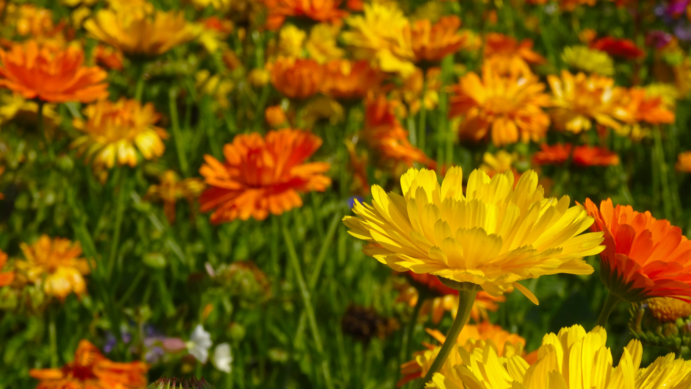
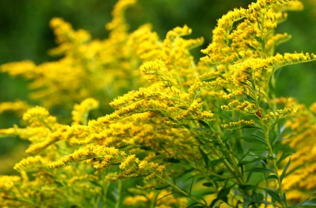
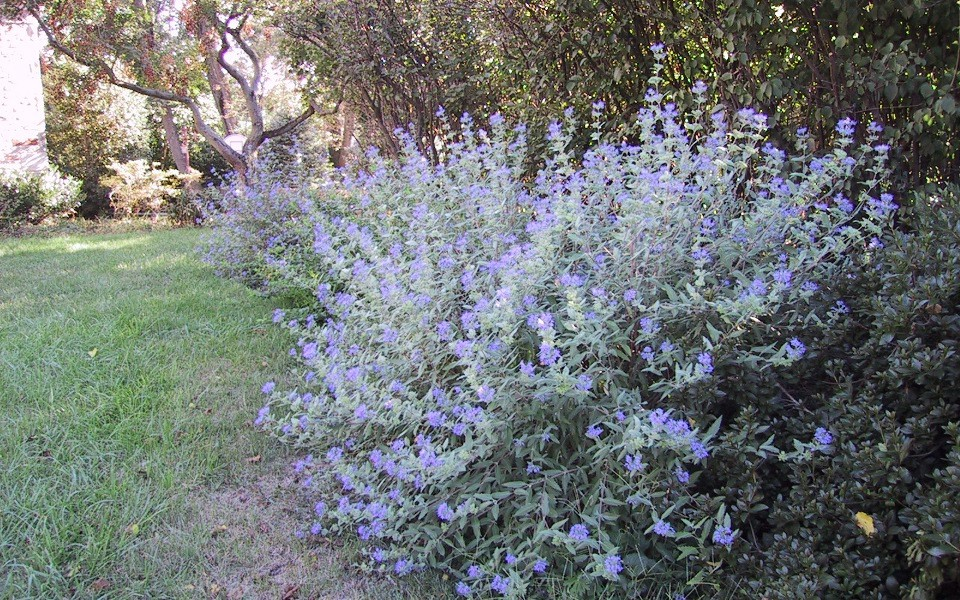
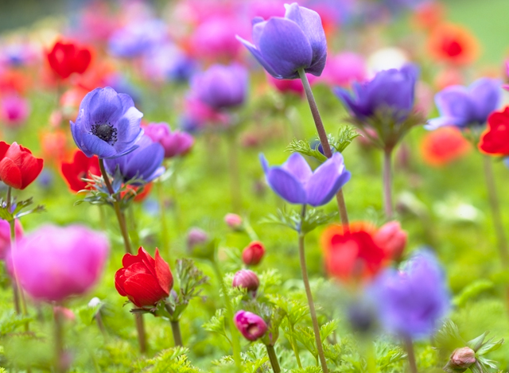

The season is changing, leaves are falling on all your plants, everything is breaking into robust oranges and yellows, and the wind foretells of a chilly winter.
It's not time yet to bundle up for the snow, we still have about 3 months to go before you get frozen flowersicles.
Some popular fall flowers include:




Be sure to keep an eye on the weather forecast in your area, as it may not be winter JUST yet, but it always helps to be prepared, and know when is just the right time to piledrive your flowerbed with six snuggly blankets to protect from the cold.
All pictures courtesy of pexel.